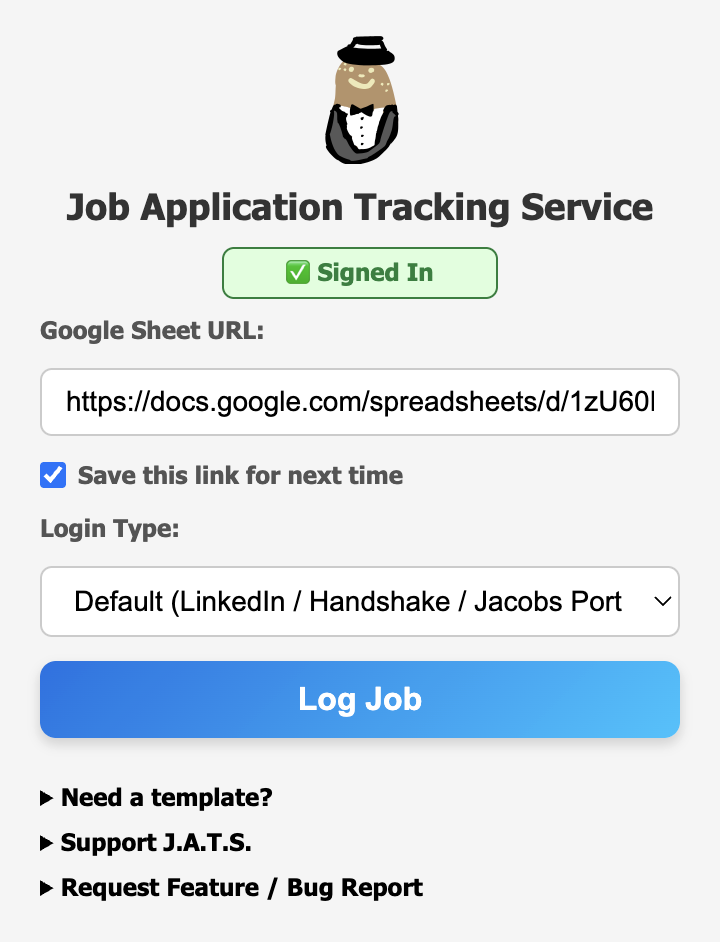

About JATS
JATS helps users log and track job applications directly in their personal Google Sheets. All data is stored securely in your own sheet and is never shared with third parties.
Extension Preview
Track your job applications quickly and efficiently!